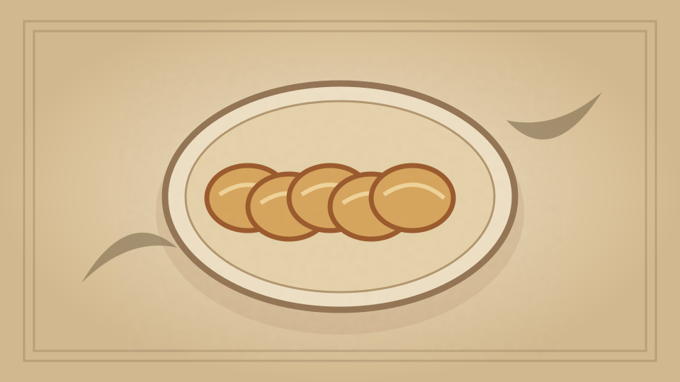

1910 · Fannie Merritt Farmer · BREAD AND BREAD MAKING
Raised Oatmeal Muffins
The Boston Cooking-School Cook Book

Historical Recipe
The following text is extracted from the 1910 edition, retaining historical terminology and quantities.
Original Ingredients & Directions
¾ cup scalded milk
¼ cup sugar
½ teaspoon salt
¼ yeast cake dissolved in
¼ cup lukewarm milk
1 cup cold cooked oatmeal
2½ cups flour
Add sugar and salt to scalded milk; when lukewarm, add dissolved yeast cake. Work oatmeal into flour with tips of fingers, and add to first mixture; beat thoroughly, cover, and let rise over night. In morning, fill buttered iron gem pans two-thirds full, let rise on back of range that pan may gradually heat and mixture rise to fill pan. Bake in moderate oven twenty-five to thirty minutes.
67 Health Food Muffins
Automatically extracted transcription; editorial verification pending. Historical instructions may not meet modern food-safety standards.